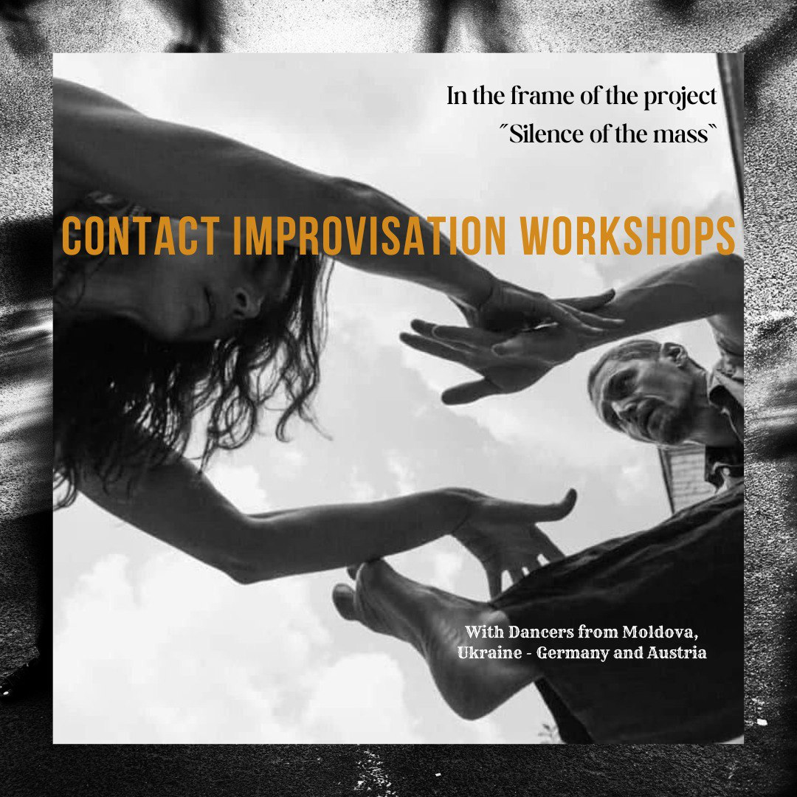
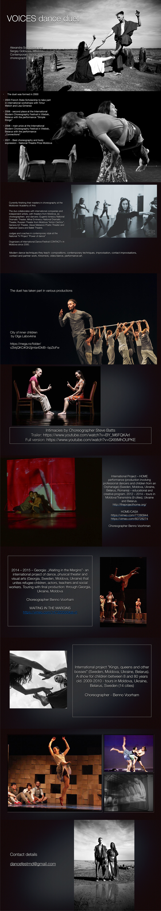
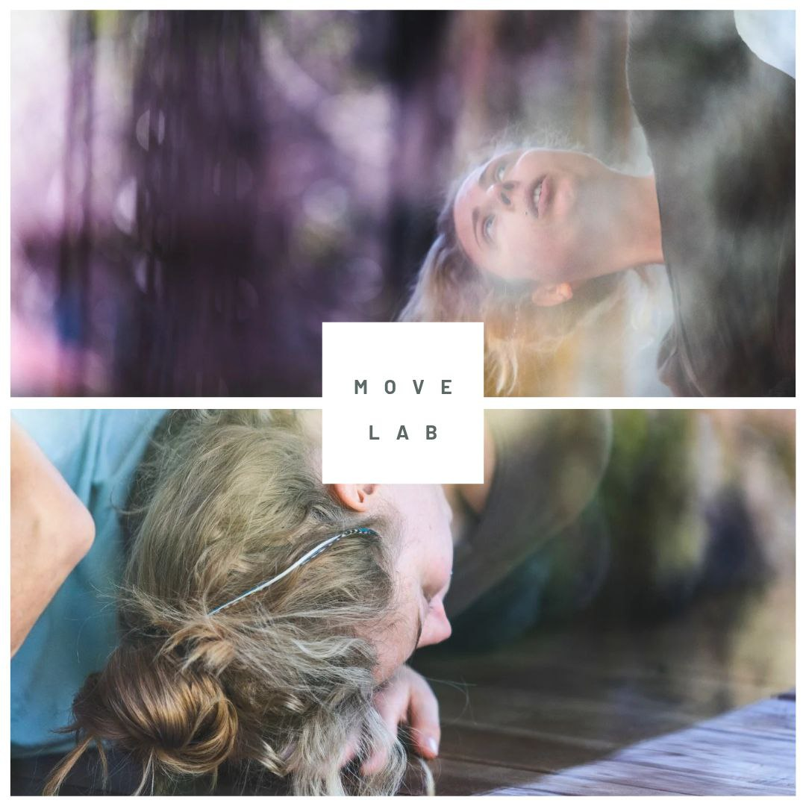

Coastal Reverie
Three days in Çıralı, Turkey, at a beautiful eco-bungalow hotel by the sea, offering space for dance, improvisation, and creative exploration. Pedro Penuella, a psychotherapist, shares his knowledge of contact improvisation through a somatic approach, drawing on his therapeutic experience, while Tamara Maksimenko leads poetic, inspired movement practices exploring love and rejection, acceptance and denial, in solo and paired work.
The seaside atmosphere and the surrounding mountains naturally encourage shared time together, from gentle walks and local excursions to evening jams, offering three days to move, breathe, connect, and simply be. Open to all genders, 18+, in a supportive and open environment.

The Silence of the Mass
When: 24 - 26 October 2025
Where: BRUX Freies Theater
Time: 19:00
Price: 20€ / 25€ / 30€
The Silence of the Mass is an international dance performance that explores silence as a social phenomenon—not as absence, but as a collective experience of resistance, passivity, and emotional resonance.
Buy Tickets & Reservation:
Please reserve via: info@brux.at

Contact Improvisation Workshops
With Serhii Semichev, Sergey Golovnya and Alexandra Soshnikova
When: 25 - 26 October 2025
Time: 10:00 - 13:00
Schedule:
- 25 October: Alexandra Soshnikova and Sergey Golovnya
- 26 October: Serhii Semichev


Invited Voice project in collaboration with local CI community
When: Thursday 26th of June (19:00 - 21:00)
Where: Falkstrasse 26, Innsbruck
Details: Workshop on Contact Improvisation with Olena Polianska (Ukraine/Germany)
Price: 15-25 euros on donation (No registration needed, just drop in)
When: Friday 27th of June (19:00 - 20:00)
Where: Kunstraum Innsbruck (in the frame of the exhibition of Michaela Schwarz)
Details: Durational performance by Olena Polyanska and Tamara Maksymenko
In this class, we explore how walking becomes the foundation of movement and a point of support for our dance. Through working with weight, attention, balance, and contact listening, we create a "map" of interaction — with space, with a partner, and with ourselves. We combine structured physical tasks, somatic observation, and improvisational research to practice embodied presence and performative sensitivity.
Olena Polianska:
Moving and teaching performer, facilitator. She explores how movement resists rigid structures and fosters dynamic, fluid expression, particularly in contexts of displacement and cultural hybridity. Her artistic practice is strongly rooted in Contact Improvisation and Instant Composition, focusing on somatic, performative, and improvisational approaches. Olena has participated in and taught at international festivals in Ukraine, Poland, Austria, Israel, Bulgaria, and Germany.

The Performative Movement Lab: Exploring Dance Research & Performance
Where: Poledance Playground Studio
When: April 5, May 10, June 7
Time: 13:00 - 16:00
Cost:
- Without membership: 25€ per session / 60€ for all three
- With membership (20% discount): 20€ per session / 48€ for all three
Session 1: Foundations of Movement Research
Discover new ways to move through guided prompts, sensory exploration, and playful tasks.
Session 2: Embodying Space & Intention
Explore how movement interacts with space, dynamics, and intention. Work with structured improvisation.
Session 3: From Exploration to Performance
Bridge movement research with performative choices. Experiment with how movement is shared with an audience.

An artistic exchange and research through drawings
Dates & Settings: 29.3. (forest); 10.5. (river); 21.6. (mountain)
Duration: 3 hours each
Material: Paper and pen(s), good outdoor shoes and gear
Cost:
- Without membership: 32€
- With membership: 26€
The art walk is therefore not a drawing course, but a magical form of expression and communication connecting the outside world with the inside world. In addition to registering, please send us an email specifying which Art Walk you would like to join. You will receive details about meeting points a few days before the event.